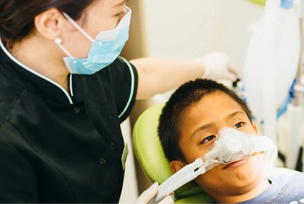
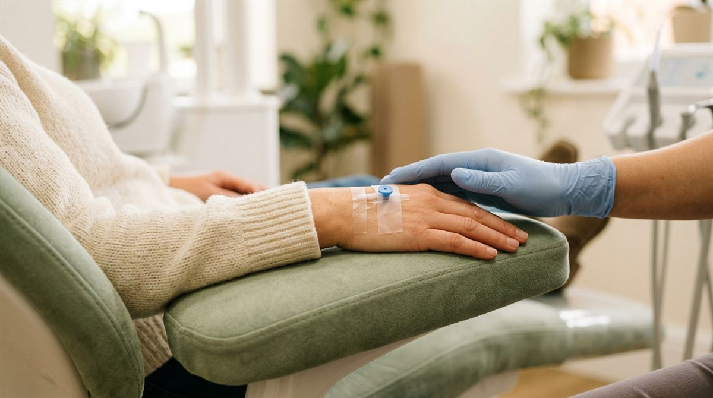

Inhalation sedationCommonly known as happy gas
Nitrous oxide, the gas used for RA treatments, is designed to put you in a happy, relaxed state.
- Back to normal
- Pretty quickly
- Driving home
- It may be okay to drive home

If you are a nervous or anxious patient, then you might be seeking a local dentist who practices in-house sedation in Pennant Hills. Here at Beyond 32 Dental, we’re proud to offer sedation dentistry in Pennant Hills right here at our modern family-focused dental practice.
Some patients might need a helping hand.
Naturally, we want our patients to have a positive experience when they visit us, but we’re also fully aware that some patients might need a helping hand.
As a result, you’ll be pleased to know that our team are highly experienced in the latest in sedation dentistry. Therefore, patients can rest assured that with us, they are in safe hands.
The two types of sedation available at Beyond 32 Dental are inhalation sedation, commonly known as happy gas, and IV sedation.

Nitrous oxide, the gas used for RA treatments, is designed to put you in a happy, relaxed state.

IV sedation is administered via a small cannula placed on the back of the hand.
Each method delivers good results and allows patients to have the treatment they need while placing them in a relaxed and happy state.
Not sure which suits you? Either way, consult with Dr Lin or Dr Chung first.
Several treatments in one visit, while you stay relaxed.
Some nervous or anxious dental patients find it hard to even sit in the dental chair, let alone have treatment, so even having one treatment can be a real push. With in-house sedation dentistry, however, patients can have several or more treatments while remaining safe under sedation.
A happy, relaxed state, often with a gentle floating feeling.
They don’t call it happy gas for nothing – it’s true! Nitrous oxide – the gas used for RA treatments – and other sedatives used in IV treatments are designed to put you in a happy, relaxed state.
Most people don’t know much about the treatment, but many people do experience feelings of euphoria and a gentle floating sensation.
Some people feel sick after receiving general anaesthetic and it can stay in your system for hours – even days. Happy gas, on the other hand, gives you zero after effects, so patients will be back to normal pretty quickly after the event.
Patients who are coming out of sedation tend to feel very relaxed and generally aware of their surroundings.
Happy gas gives you zero after effects, so patients will be back to normal pretty quickly after the event.
IV sedation doesn’t work quite as instantaneously, but patients should be back to normal within the hour. For this reason, it may be okay to drive home after undergoing happy gas, but you will need someone to drive you if IV sedation is carried out.
Either way, consult with Dr Lin or Dr Chung first.
Sedation is not a general anaesthetic and as a result, any risks are virtually non-existent. Instead, patients who are coming out of sedation tend to feel very relaxed and generally aware of their surroundings.
In-house sedation here in Pennant Hills can be safely used on adults and children alike across a wide range of treatments.
Have a question about sedation?
Call (02) 9158 6334 →Any surgical or invasive procedure carries risks. Before proceeding, you should seek a second opinion from an appropriately qualified health practitioner.